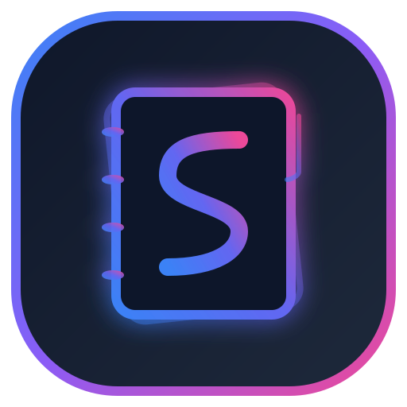

Browse, edit, and manage your notes and todos — entirely in the browser, reading and writing directly to disk.
Version 4.0.1
Select how and where you want Secretary to store and sync your notes, tasks, and data.
Direct read and write access to files on your computer. 100% private, offline-first, fast, and no cloud lock-in.
100% Free on Google's Spark tier. Bring your own Firebase project with client-side AES-256-GCM Zero-Knowledge encryption.
Turnkey managed cloud infrastructure with Zero-Knowledge E2EE encryption, automated sync and backups. Free during early preview (Paid subscription service in future).
Explore Secretary instantly in your browser with interactive sample notes, tasks, and calendar blocks.
Connect a local or cloud AI provider for smart summaries, task extraction, and chat.
Faites le point sur vos réunions d'aujourd'hui, validez les actions générées et préparez demain sereinement.
Passez en revue les notes rapides du stash. Transformez-les en tâches, notes de réunion, blocs horaires ou supprimez-les.
Ajustez l'emploi du temps d'aujourd'hui selon la réalité. Validez les réunions effectuées et planifiez la suite.
Passez en revue les notes de la journée, reliez les blocs du planner si nécessaire et extrayez les décisions.
L'IA a agrégé les notes de toutes vos réunions du jour dans une note journalière structurée.
L'IA a extrait ces actions des notes du jour. Vous pouvez les ajouter au board ou planifier un bloc de travail.